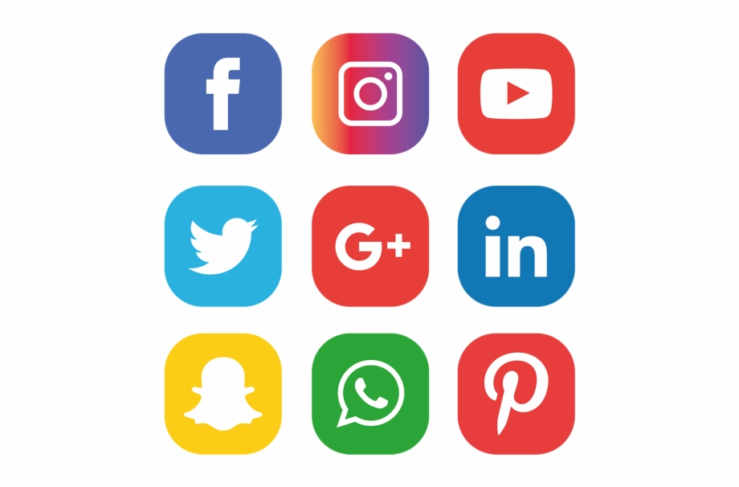

At the end of any website, you will see a list of buttons of various social media websites so that you can connect with them on those sites. In this tutorial, you will learn how to add these icons to your own site.
Language/Framework used: Javascript, NodeJS
Last Updated: 15-03-2022
In your HTML file, inside the head section, use the following CDN link to import icons.
<link rel="stylesheet" href="https://cdnjs.cloudflare.com/ajax/libs/font-awesome/4.7.0/css/font-awesome.min.css">
Use the following code in your html file. These are the links of official pages of IndiGO on facebook, linkedin, twitter, instagram, etc. You can change these links in the href attribute with links of your own site pages. The classes used here are for using the icons of the respective social media sites.
<a href="https://www.facebook.com/goindigo.in/" target="_blank" rel="noopener noreferrer" class="fa fa-facebook"></a>
<a href="https://twitter.com/IndiGo6E?ref_src=twsrc%5Egoogle%7Ctwcamp%5Eserp%7Ctwgr%5Eauthor" target="_blank" rel="noopener noreferrer" class="fa fa-twitter"></a>
<a href="https://www.instagram.com/indigo.6e/?hl=en" target="_blank" rel="noopener noreferrer" class="fa fa-instagram"></a>
<a href="https://www.youtube.com/channel/UCia1zq8LyeiMgKNMDdslhkw" target="_blank" rel="noopener noreferrer" class="fa fa-youtube"></a>
<a href="https://in.linkedin.com/company/indigo-airlines" target="_blank" rel="noopener noreferrer" class="fa fa-linkedin"></a>
At last add this css for styling your icons. The CSS added here is the one which looks similar to the actual icons. However you can change the colour, style, shape, size according to your convenience by changing the css.
/* For styling the buttons */
.fa {
padding: 20px;
font-size: 30px;
width: 30px;
text-align: center;
text-decoration: none;
border-radius: 50%;
}
/*For adding a hover effect*/
.fa:hover {
opacity: 0.7;
}
Add the following styling for changing the colour of icon of facebook.
.fa-facebook {
background: #3B5998;
color: white;
}
Add the following styling for changing the colour of icon of twitter.
.fa-twitter {
background: #55ACEE;
color: white;
}
Add the following styling for changing the colour of icon of youtube.
.fa-youtube{
background: #bb0000;
color: white;
}
Add the following styling for changing the colour of icon of linkedin.
.fa-linkedin{
background: #007bb5;
color: white;
}
Add the following styling for changing the colour of icon of instagram.
.fa-instagram{
background: #125688;
color: white;
}
You can change these colours and the styling of button according to your own preference.